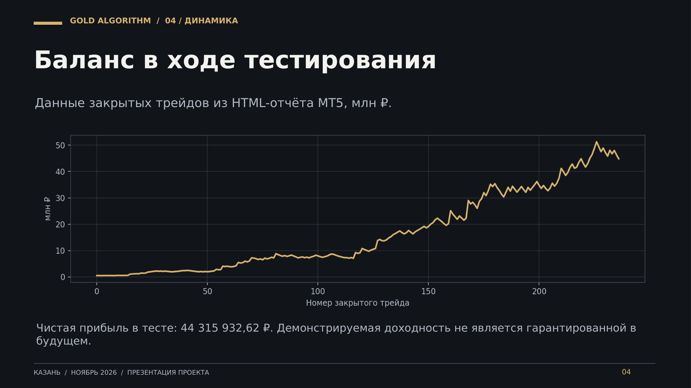

GOLD ALGORITHM
Алгоритмическая торговля на мировом рынке золота
Функционирующий программный продукт для MetaTrader 5. Ищу долгосрочных бизнес-партнёров и первых клиентов.
Обсудить сотрудничествоПрезентация проекта (PDF)Технология
Три самостоятельных торговых алгоритма объединены в единую систему автоматического анализа рынка и исполнения торговых решений по XAUUSD. Разработка основана на самостоятельных исследованиях финансовых рынков.
Три алгоритма
Единая координация торговых решений.Автоматизация
Работа в MetaTrader 5 без ручного принятия каждого решения.Управление позициями
Без сетки ордеров и мартингейла.Историческое тестирование
01.01–22.11.2026 · XAUUSD · M5 · кредитное плечо 1:10

Тестирование на реальных тиковых данных с учётом спредов, свопов и задержки исполнения в тестере MT5. Объём позиций менялся.
Демонстрируемая доходность не является гарантированной в будущем. Эффективность в реальной торговле предстоит подтвердить. Торговля с кредитным плечом сопряжена с риском существенных убытков.Возможности сотрудничества
Долгосрочное партнёрство
Совместная коммерциализация, продвижение, привлечение клиентов и развитие предприятия. Возможность доли коммерческих доходов и участия в капитале будущей компании обсуждается индивидуально.Первые клиенты
Аренда программного продукта. Торговый капитал остаётся на собственном счёте клиента в ФИНАМ ФОРЕКС. Разработчик не получает доступа к пополнению и выводу средств.Для первых клиентов и партнёров готовы обсуждаться особые долгосрочные условия. Участие в качестве клиента может перерасти в деловое партнёрство.
Перспективы развития
Цель — создание научно-технологической лаборатории для исследования финансовых рынков, разработки новых алгоритмических систем, расширения спектра инструментов и создания программных решений по индивидуальным заказам.
Сегодня проект развивается силами автора. Финансовые возможности самостоятельного масштабирования ограничены. Открыт к объединению ресурсов и компетенций.
Контакты
Казань · Дистанционное сотрудничество
Telegram @Im_against+7 (919) 637-09-94esv.fx@yandex.ru